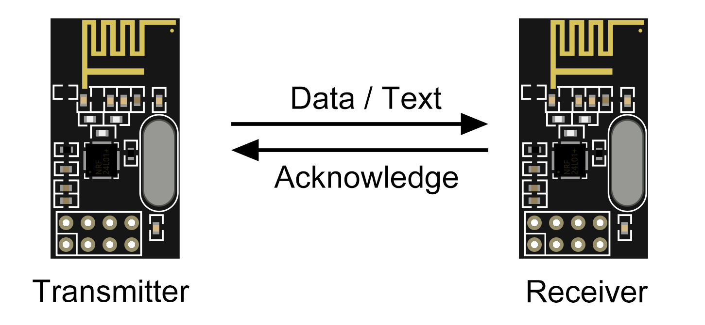

Arduino Wireless Communication with nRF24L01 Tutorial¶

Introduction¶
This tutorial demonstrates how to establish wireless communication between two Arduino boards using nRF24L01 transceiver modules. The nRF24L01 operates on the 2.4 GHz frequency and is capable of transmitting data up to 100 meters.
Theory¶
The nRF24L01 module is a transceiver, meaning it can both send and receive data. It operates in the 2.4 GHz ISM band, which is license-free worldwide. Key features include:
- Frequency Hopping: It uses frequency-hopping spread spectrum (FHSS), which improves reliability and reduces interference by switching frequencies during transmission.
- Data Rate: It supports data rates of 250 kbps, 1 Mbps, and 2 Mbps. Higher data rates reduce transmission time, which can help in saving power.
- Communication Protocol: nRF24L01 uses a simple and efficient communication protocol with a 5-byte address to identify devices. It supports up to 6 communication channels, allowing multiple nRF24L01 modules to communicate simultaneously without interference.
- Power Management: The module can operate in different power modes, including a power-down mode to save energy when not transmitting.
- SPI Interface: Communication with the Arduino is done through the Serial Peripheral Interface (SPI). This interface allows fast data transfer between the Arduino and the nRF24L01 module.
How It Works¶
- Initialization: The module needs to be initialized and configured using the SPI interface. This includes setting the transmission power, data rate, and channel frequency.
- Addressing: Each module must be assigned a unique address. This ensures that only the intended receiver can accept the data sent by a particular transmitter.
- Sending Data: Data is loaded into the module’s buffer and then transmitted over the air. The module automatically handles packet formation, including the address, payload, and CRC (Cyclic Redundancy Check) for error detection.
- Receiving Data: The receiver module continuously listens for data packets. When a packet with a matching address is received, it is checked for errors and then the payload is extracted and processed.
By understanding these principles, you can effectively use the nRF24L01 modules for reliable and efficient wireless communication in your Arduino projects.
nRF24L01 Module Tutorial for Arduino Nano: Sending a Simple Text Message¶
This tutorial will guide you through setting up two Arduino Nanos to communicate using the nRF24L01 wireless communication module. We'll transmit a simple "Hello, World!" message from one Arduino (the sender) to another Arduino (the receiver).
Requirements¶
- 2 x nRF24L01 Modules
- 2 x Arduino Nano
- Breadboards and jumper wires
- Arduino IDE installed on your computer
- Necessary library:
RF24
Setup¶
Wiring the nRF24L01 Module to Arduino Nano¶
nRF24L01 Module¶

- VCC (Power) -> Connect to Arduino Nano 3.3V (Note: Do not connect to 5V as it might damage the module)
- GND (Ground) -> Connect to Arduino Nano GND
- CE (Chip Enable) -> Connect to Arduino Nano D9
- CSN (Chip Select Not) -> Connect to Arduino Nano D10
- SCK (Clock) -> Connect to Arduino Nano D13
- MOSI (Master Out Slave In) -> Connect to Arduino Nano D11
- MISO (Master In Slave Out) -> Connect to Arduino Nano D12
- IRQ (Interrupt, optional) -> Leave unconnected or connect to an Arduino digital pin if needed
Installing Required Libraries¶
- Open the Arduino IDE.
- Go to Sketch > Include Library > Manage Libraries.
- Install the
RF24library.
Basic Code Example¶
Transmitter Code¶
#include <SPI.h>
#include <nRF24L01.h>
#include <RF24.h>
RF24 radio(9, 10); // CE, CSN
const byte address[6] = "00001";
void setup() {
Serial.begin(9600);
// Initialize the nRF24L01 module
radio.begin();
radio.openWritingPipe(address);
radio.setPALevel(RF24_PA_MIN);
radio.stopListening();
Serial.println("Transmitter Ready");
}
void loop() {
const char text[] = "Hello, World!";
// Send data
radio.write(&text, sizeof(text));
Serial.println("Sent: Hello, World!");
delay(1000);
}
Receiver Code¶
#include <SPI.h>
#include <nRF24L01.h>
#include <RF24.h>
RF24 radio(9, 10); // CE, CSN
const byte address[6] = "00001";
void setup() {
Serial.begin(9600);
// Initialize the nRF24L01 module
radio.begin();
radio.openReadingPipe(0, address);
radio.setPALevel(RF24_PA_MIN);
radio.startListening();
Serial.println("Receiver Ready");
}
void loop() {
if (radio.available()) {
char text[32] = "";
radio.read(&text, sizeof(text));
Serial.print("Received: ");
Serial.println(text);
}
delay(1000);
}
Code Explanation¶
- Libraries: Includes the necessary library for the nRF24L01 module.
- Initialization: Initializes the nRF24L01 module in the
setupfunction. - Data Transmission: The transmitter sends a simple "Hello, World!" message via the nRF24L01 module.
- Data Reception: The receiver reads the incoming data and prints it to the Serial Monitor.
Running the Code¶
- Connect your first Arduino Nano (Device 1) to your computer via USB.
- Open the Arduino IDE and paste the transmitter code.
- Select the correct board (Arduino Nano) and port under Tools.
- Upload the code to your Arduino Nano.
- Open the Serial Monitor for Device 1 to observe the transmitted message.
- Connect your second Arduino Nano (Device 2) to your computer via USB.
- Open the Arduino IDE and paste the receiver code.
- Select the correct board (Arduino Nano) and port under Tools.
- Upload the code to your Arduino Nano.
- Open the Serial Monitor for Device 2 to observe the received message.
Troubleshooting¶
- No Communication: Check the wiring, ensure the correct power supply is used, and verify the CE and CSN pins are correctly connected.
- Incorrect Readings: Ensure the Serial Monitor settings (baud rate) and ensure the correct COM port is selected.
Additional Resources¶
This simple tutorial should help you get started with basic communication using the nRF24L01 modules. Experiment with different messages and setups to fully explore the capabilities of your project. Happy experimenting!
nRF24L01 Separate MPU6050 and VL53L0X Data Transmission¶
In this tutorial, we'll set up two Arduino Nanos to communicate using the nRF24L01 module. One Arduino will transmit data from an MPU6050 sensor, while the other will transmit data from a VL53L0X sensor. We'll also implement a method to choose whether the device is currently a sender or receiver and enable two-way communication.
Requirements¶
- 2 x nRF24L01 Modules
- 2 x Arduino Nano
- MPU6050 Sensor
- VL53L0X ToF Sensor
- Breadboards and jumper wires
- Arduino IDE installed on your computer
- Necessary libraries:
RF24,Wire,Adafruit_VL53L0X,MPU6050
Setup¶
Wiring the nRF24L01 Module to Arduino Nano¶
nRF24L01 Module¶
- VCC (Power) -> Connect to Arduino Nano 3.3V (Note: Do not connect to 5V as it might damage the module)
- GND (Ground) -> Connect to Arduino Nano GND
- CE (Chip Enable) -> Connect to Arduino Nano D9
- CSN (Chip Select Not) -> Connect to Arduino Nano D10
- SCK (Clock) -> Connect to Arduino Nano D13
- MOSI (Master Out Slave In) -> Connect to Arduino Nano D11
- MISO (Master In Slave Out) -> Connect to Arduino Nano D12
- IRQ (Interrupt, optional) -> Leave unconnected or connect to an Arduino digital pin if needed
Installing Required Libraries¶
- Open the Arduino IDE.
- Go to Sketch > Include Library > Manage Libraries.
- Install the
RF24,Adafruit_VL53L0X, andMPU6050libraries.
Basic Code Example¶
Common Code for Both Devices¶
First, write the common setup and loop code to determine whether the device is a sender or receiver.
#include <SPI.h>
#include <nRF24L01.h>
#include <RF24.h>
#include <Wire.h>
#include "Adafruit_VL53L0X.h"
#include <MPU6050.h>
RF24 radio(9, 10); // CE, CSN
const byte addresses[][6] = {"00001", "00002"};
// Create MPU6050 object
MPU6050 mpu;
// Create VL53L0X object
Adafruit_VL53L0X tof = Adafruit_VL53L0X();
enum Mode { SENDER, RECEIVER };
Mode currentMode;
void setup() {
Serial.begin(9600);
// Initialize the nRF24L01 module
radio.begin();
radio.setPALevel(RF24_PA_MIN);
Serial.println("Enter 'S' for Sender or 'R' for Receiver:");
while (!Serial.available());
char input = Serial.read();
if (input == 'S' || input == 's') {
currentMode = SENDER;
radio.openWritingPipe(addresses[0]);
radio.openReadingPipe(1, addresses[1]);
radio.stopListening();
Serial.println("Mode: Sender");
} else if (input == 'R' || input == 'r') {
currentMode = RECEIVER;
radio.openWritingPipe(addresses[1]);
radio.openReadingPipe(1, addresses[0]);
radio.startListening();
Serial.println("Mode: Receiver");
}
// Initialize MPU6050 if sender
if (currentMode == SENDER) {
Wire.begin();
mpu.initialize();
if (!mpu.testConnection()) {
Serial.println("Could not find a valid MPU6050 sensor, check wiring!");
while (1);
}
}
// Initialize VL53L0X if receiver
if (currentMode == RECEIVER) {
Wire.begin();
if (!tof.begin()) {
Serial.println("Failed to boot VL53L0X");
while (1);
}
}
}
void loop() {
if (currentMode == SENDER) {
sendIMUData();
} else {
receiveAndSendToFData();
}
delay(1000);
}
struct IMUData {
float ax;
float ay;
float az;
};
struct ToFData {
uint16_t distance;
};
void sendIMUData() {
IMUData data;
mpu.getAcceleration(&data.ax, &data.ay, &data.az);
radio.write(&data, sizeof(data));
Serial.print("Sent IMU Data - ax: "); Serial.print(data.ax);
Serial.print(", ay: "); Serial.print(data.ay);
Serial.print(", az: "); Serial.println(data.az);
}
void receiveAndSendToFData() {
if (radio.available()) {
IMUData imuData;
radio.read(&imuData, sizeof(imuData));
Serial.print("Received IMU Data - ax: "); Serial.print(imuData.ax);
Serial.print(", ay: "); Serial.print(imuData.ay);
Serial.print(", az: "); Serial.println(imuData.az);
// Read ToF data
ToFData tofData;
tof.rangingTest(&tofData.distance, false);
// Send ToF data back
radio.stopListening();
radio.write(&tofData, sizeof(tofData));
radio.startListening();
Serial.print("Sent ToF Data - distance: "); Serial.println(tofData.distance);
}
}
Code Explanation¶
- Mode Selection: The setup prompts the user to select whether the device is a sender or receiver.
- Sensor Initialization: Initializes the MPU6050 sensor if the device is a sender, and initializes the VL53L0X sensor if the device is a receiver.
- Data Transmission:
- The sender reads data from the MPU6050 sensor and transmits it.
- The receiver reads the incoming MPU6050 data, reads the ToF data from the VL53L0X sensor, and sends the ToF data back to the sender.
Running the Code¶
- Connect your first Arduino Nano (Device 1) to your computer via USB.
- Open the Arduino IDE and upload the common code.
- Open the Serial Monitor and enter 'S' to set Device 1 as the sender.
- Connect your second Arduino Nano (Device 2) to your computer via USB.
- Open the Arduino IDE and upload the common code.
- Open the Serial Monitor and enter 'R' to set Device 2 as the receiver.
- Observe the transmitted and received data on the Serial Monitors of both devices.
Advanced Task: Two-Way Communication¶
Objective¶
Implement two-way communication where both Arduinos can send and receive data.
Instructions¶
- Modify the
receiveAndSendToFDatafunction to handle the reception of ToF data at the sender. - Update the
sendIMUDatafunction to handle the reception of IMU data at the receiver.
void loop() {
if (currentMode == SENDER) {
sendIMUData();
receiveToFData();
} else {
receiveIMUDataAndSendToFData();
}
delay(1000);
}
void sendIMUData() {
IMUData data;
mpu.getAcceleration(&data.ax, &data.ay, &data.az);
radio.stopListening();
radio.write(&data, sizeof(data));
radio.startListening();
Serial.print("Sent IMU Data - ax: "); Serial.print(data.ax);
Serial.print(", ay: "); Serial.print(data.ay);
Serial.print(", az: "); Serial.println(data.az);
}
void receiveIMUDataAndSendToFData() {
if (radio.available()) {
IMUData imuData;
radio.read(&imuData, sizeof(imuData));
Serial.print("Received IMU Data - ax: "); Serial.print(imuData.ax);
Serial.print(", ay: "); Serial.print(imuData.ay);
Serial.print(", az: "); Serial.println(imuData.az);
// Read ToF data
ToFData tofData;
tof.rangingTest(&tofData.distance, false);
// Send ToF data back
radio.stopListening();
radio.write(&tofData, sizeof(tofData));
radio.startListening();
Serial.print("Sent ToF Data - distance: "); Serial.println(tofData.distance);
}
}
void receiveToFData() {
if (radio.available()) {
ToFData tofData;
radio.read(&tofData, sizeof(tofData));
Serial.print("Received ToF Data - distance: "); Serial.println(tofData.distance);
}
}
Explanation¶
- Two-Way Communication:
- The sender now also receives ToF data after sending IMU data.
- The receiver receives IMU data, reads ToF data, and sends it back to the sender.
Tips¶
- Ensure your wiring is secure to avoid intermittent connections.
- Use a stable power supply to avoid fluctuations in sensor readings.
- Calibrate the sensors if you notice significant drift in the readings.
Troubleshooting¶
- No Communication: Check the wiring, ensure the correct power supply is used, and verify the CE and CSN pins are correctly connected.
- Incorrect Readings: Ensure the
sensors are correctly connected and not causing noise in the readings. - No Output: Verify the Serial Monitor settings (baud rate) and ensure the correct COM port is selected.
This tutorial and the tasks provided should help you integrate and use the nRF24L01 module with your Arduino Nano to send and receive sensor data from both MPU6050 and VL53L0X sensors. Experiment with different setups and configurations to fully explore the capabilities of your project. Happy experimenting!